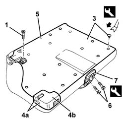
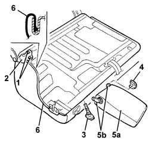
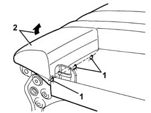
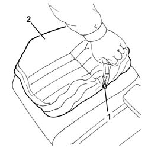
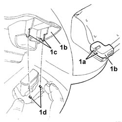

7050A26 Rear seat BACKREST COVER - R.R. with seat removed
- Path
- Procedures > 70 FITTINGS > 7050 REAR SEATS > 7050A rear seat assembly > 7050A26 Rear seat BACKREST COVER - R.R. with seat removed
- Kind
- repair procedure (removal / refitting; the operation number is the code)
- Applies to
- all engines; all production periods
- Interactive page
- https://sloeber94.github.io/elrnDB-a147/en/#/3025881
Applies to: all engines; all production periods
 Removing
Removing
 Refitting
Refitting7050B10 l/h or r/h head restraint (one) of rear seat - r+r
7050B30 rear seat central armest r r (only for the right side)
1. Undo the bolt fixing the mounting ring.
2. Remove the mounting ring.
3. Release the retaining buttons using the special tool.
 | Name | Country |
|---|---|---|
3 | Scraper blade | 1.823.015.000 |
4. Undo the bolts (4a) and remove the protection (4b), then retighten bolts (4a).
5. Remove the squab protection.
6. Unscrew the bolts
7. Remove the belt slide by undoing the inner retainer with the appropriate tool.
| Name | Country |
|---|---|---|
7 | Scraper blade | 1.823.015.000 |

Applies to: all engines; all production periods
1. Unscrew the bolts
2. Remove the seat anchor bracket.
3. Remove the head restraint tubes.
4. Remove the armrest embellishment.
5. Remove the armrest (5a), disengaging it from the retainers (5b).
6. Remove the cover along the entire perimeter of the seat.

Applies to: all engines; all production periods
1. Cut the hooks securing the trim to the frame using cutters.
2. Remove the cover from the padding.

Applies to: all engines; all production periods
1. Working in the armrest compartment, use cutters to cut the top retaining hooks on the squab cover.
2. Remove the trim from the padding.

Applies to: all engines; all production periods
Refitting
RemovingCheck that the trim is undamaged.
Fit the cover on the padding.
Hook on the top retaining hooks.
Fit the trim with padding and stake the hooks securing the trim to the frame in the armrest compartment.
Fit the cover along the whole perimeter.
Fit the armrest on the retainers.
Fit the armrest panel.
Fit the head restraint tubes.
Fit the seat anchorage bracket and fix it with the bolts.
Position the belt slide and do up the inner retainer. Then secure with bolts.
Position the squab protection and fix it with the retaining buttons.
1. Undo the side bolts (1a) of the lock, position the protection (1b) then retighten the bolts.
NOTE Make sure that the retainers (1c) of the protection (1b) fit correctly in their seatings (1d) in the engagement assembly.

Applies to: all engines; all production periods
Position the mounting ring and secure with bolts.
7050B30 rear seat central armest r r (only for the right side)